ROME

|


Top Attractions in Rome
-
Coliseum The Colosseum is the main symbol of Rome. It's an imposing construction that, with almost 2,000 years of history, will bring you back in time to discover the way of life in the Roman Empire.
The construction of the Colosseum began in the year 72 under the empire of Vespasian and was finished in the year 80 during the rule of the emperor Titus. After completion, the Colosseum became the greatest Roman amphitheater, measuring 188 meters in length, 156 meters in width, and 57 meters in height.
The Colosseum in Ancient Times
During the Roman Empire and under the motto of "Bread and Circuses" the Roman Colosseum (known then as Flavian Amphitheatre) allowed more than 50,000 people to enjoy its finest spectacles. The exhibitions of exotic animals, executions of prisoners, recreations of battles, and gladiator fights kept the Roman people entertained for years.
The Colosseum remained active for over 500 years. The last recorded games in history were celebrated in the 6th century.
Since the 6th century, the Colosseum has suffered lootings, earthquakes, and even bombings during World War Two. Demonstrating a great survival instinct, the Colosseum was used for decades as a storehouse, church, cemetery, and even a castle for nobility.
Trivia
- The original name "Flavian Amphitheatre" was changed to the Colosseum due to the great statue of Nero that was located at the entrance of the Domus Aurea, "The Colossus of Nero". The Domus Aurea was a great palace built under the orders of Nero after the Fire of Rome.
- The emperor Titus inaugurated the Colosseum with 100 days of games, which took the lives of more than 2,000 gladiators.
- The Colosseum had a canvas ceiling to protect people from the sun. The machinery and cages were located beneath the arena.
- There are some theories that the Colosseum was filled with water for naval battle recreations, although for the moment there have not been conclusive investigations.
- Every Good Friday the Pope leads the Way of the Cross procession in the Colosseum. This place has always been closely connected with the church and on this day the early Christians that died in the arena are remembered.

Location
-
Pantheon The Pantheon of Agrippa, also known as the Roman Pantheon, is one of the architectural masterpieces of the Italian capital. It is the best preserved building from ancient Rome.
The construction of the current Pantheon was carried out during the reign of Hadrian, in the year 126 A.D. The name of Agrippa comes from the place in which the current building is built, which was previously occupied by the Pantheon of Agrippa, built in the year 27 B.C and that was destroyed in a fire in the year 80 A.D.
At the beginning of the 7th century the building was donated to the Pope Boniface IV, who transformed it into a church, in which function it currently finds itself in a perfect state of preservation.
Architecture
The most surprising aspect of the architecture in the Pantheon is its measurements: the circular building has exactly the same diameter as its height: 43.5 metres. The dome, which has the same diameter, is bigger than that of St. Peter's Basilica. At its top, a 9 meter diameter opening allows natural light to illuminate the entire building.
The rectangular facade that hides the enormous dome is comprised of 16 granite columns which are each 14 meters in height, on which the following inscription can be seen: "M.AGRIPPA.L.F.COS.TERTIVM.FECIT", which means "Marcus Agrippa, son of Lucius, built this temple when he was a Consul."
The interior
In the interior of the Pantheon the tombs of numerous Italian kings and a multitude of art works are found. The best-known person who can be found buried in the Pantheon is without doubt the painter and Renaissance architect Raphael.

Location
-
Roman Forum The Roman Forum was where religious and public life in ancient Rome took place. The Forum is, along with the Colosseum, the greatest sign of the splendor of the Roman Empire that can be seen today.
After the fall of the Empire, the Roman Forum was forgotten and little by little it was buried under the earth. Although in the 16th century, the existence and location of the Forum were already known, it was not until the 20th century that excavations were carried out.
Interestingly, the place where the Forum was built was originally a marshy area. In the 6th century B.C., the area was drained by means of the Cloaca Maxima, one of the first sewer systems in the world.
Points of interest
Besides the great number of temples that are in the forum (Saturn, Venus, Romulus, Vesta, etc.), it's worth paying special attention to the following points of interest:
- Via Sacra: This was the main street in ancient Rome that linked the Piazza del Campidoglio with the Colosseum.
- Arch of Titus: This is a triumphal arch that commemorates Rome's victory over Jerusalem. It was built after the death of the emperor Titus.
- Arch of Septimius Severus: An arch erected in the year 203 A.D. to commemorate the third anniversary of Septimius Severus as the emperor.
- Temple of Antoninus and Faustina: Built in the second century, the Temple of Antoninus and Faustina sets itself apart as the best-preserved temple in the Roman Forum.
- Basilica of Maxentius and Constantine: Though now mostly destroyed, its size suggests that this was one of the most important buildings of the Roman Forum.
- The Curia: In this building, the Senate met to make administrative decisions about the Roman government.
- Column of Phocas: Erected in the year 608 A.D. in honor of the emperor of Byzantium, this column, which is over 13 meters high, is one of the few that have remained standing since being built.


A must-see
Visiting Rome without walking around the Forum is like going to Paris without seeing the Eiffel Tower. As you travel along the Via Sacra, close your eyes and imagine it as it was more than 20 centuries ago, when Julius Caesar walked there.
The best way to skip the line and get to know the Forum in detail is to take a guided tour. We'll visit three of the main monuments in the city, the Colosseum, Roman Forum, and Palatine Hill, skipping the line, and all with an expert guide.
If you prefer to discover it on your own, we recommend that you head first thing in the morning, as this is when people head to visit the Vatican. You can also skip the lines with the Rome Pass discount card.
Location
-
Piazza Navona Defined during the fifteenth century, the Baroque-style Piazza Navona is one of the most charming and popular squares in Rome.
The public square is built on the site where the Stadium of Domitian (Circus Agonalis), founded in 86 AD, once stood. It could hold approximately 20,000 spectators, which came here to see different athletic competitions.
Fountains of Piazza Navona
The most beautiful parts of Piazza Navona are its three fountains, designed during the papacy of Gregory XIII:
-
Fontana dei Quattro Fiumi
Erected in the centre of Piazza Navona, the Fontana dei Quattro Fiumi (Fountain of the Four Rivers) was designed by Bernini in 1651. The four statues represent the most important rivers of the continents where Christianity had spread; the Nile, Danube, the Ganges and Rio de la Plata. In the middle there is an obelisk measuring 52 ft (16 m), which had originally been part of the Circus of Maxentius, found in the Appian Way Regional Park.
-
Fontana del Moro
Sculpted by Giacomo della Porta and later perfected by Bernini, who added the figure of the Moor, the fountain was initially called the “Seashell Fountain.” This fountain is located on the southern side of the square.
-
Fontana del Nettuno
The Fontana del Nettuno (Fountain of Neptune) was also created by Giacomo della Porta in 1574, but remained unfinished for approximately three-hundred years, until 1878, when it was decorated by Antonio Della Bitta and Gregorio Zappalà.
A charming area
The square is surrounded by restaurants and terraces giving Piazza Navona a lively and delightful atmosphere during the day. Here, visitors can enjoy performances by street artists like magicians and dancers.
The most imposing buildings which look onto the square are the Church of Sant'Agnese in Agone and the Palazzo Pamphilj.


Location
-
-
Vatican City Vatican City (Città del Vaticano in Italian) is an independent city-state located in the heart of Rome, ruled by the Pope (Bishop of Rome). It is the centre of authority over the Roman Catholic Church.
The Vatican is the smallest state in Europe. It has a total area of 0,44 km² and inside its wall live approximately 1000 people.
In this small state lives the Pope, in the Apostolic palace surrounded by beautiful gardens. The palace is open to the public, but visitors have to book in advance.
The Vatican City was declared independent from the rest of Italy on 11 February 1929, with the signing of the Lateran Treaty between Pope Pius XI and Mussolini.
There are three main attractions in Vatican City: St. Peter’s Square (Piazza San Pietro), St. Peter’s Basilica and the Vatican Museums, where the Sistine Chapel is located.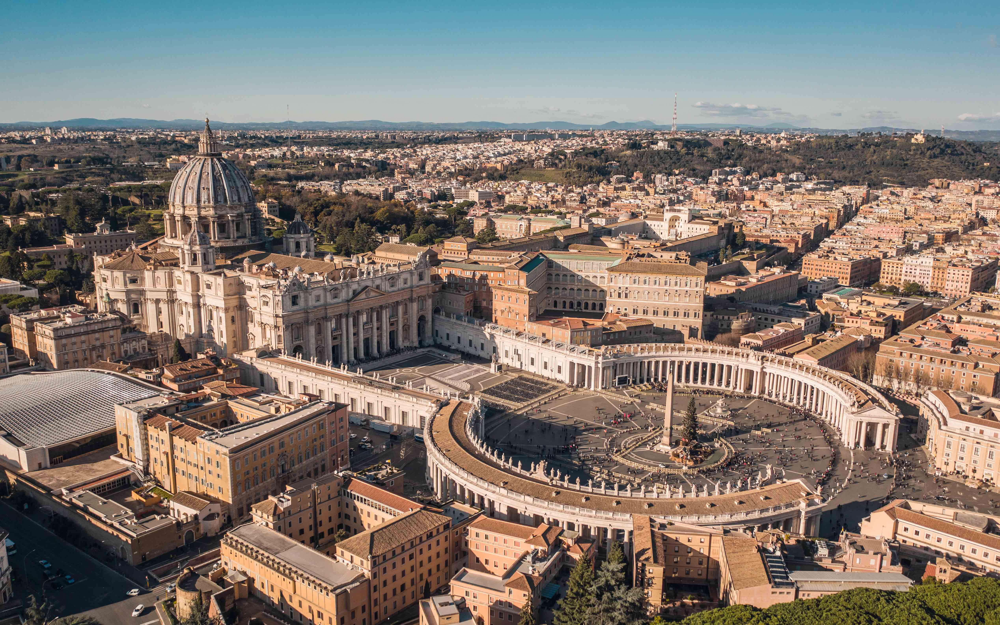 Location
-
Catacombs of Rome The Catacombs of Rome are former underground burial grounds that date from the second to the fifth century and were principally used by Christians and Jews.
The catacombs are subterranean passageways that were used as place of burial for a number of centuries. The burials of Jewish, pagan and early Christian Roman citizens in the catacombs began in the second century and ended in the fifth century.
The word catacomb, which means "next to the quarry", comes from the fact that the first excavations to be used as a place of burial were carried out in the outskirts of Rome, next to the site of a quarry.
The reason for the catacombs
The Christians did not agree with the pagan custom of burning the bodies of their dead, for which reason to solve problems created from a lack of space and the high price of land they decided to create these vast underground cemeteries.
The catacombs possess a huge number of subterranean passageways that form real labyrinths that are several kilometres long, along which rows of rectangular niches were dug out.
The corpses were wrapped in a sheet and placed in the niches, which were then covered with gravestones made of marble or, more commonly, baked clay. Subsequently, the name of the deceased was carved on the cover accompanied by a Christian symbol.
Roman law at the time prohibited the burial of the deceased in the interior of the city, for which reason all of the catacombs were located outside of the walls. These separated and hidden places below ground constituted the perfect refuge in which the Christians could bury their own, freely using Christian symbols.
The end of persecutions
On signing the Edict of Milan in the year 313, the persecution of Christians ceased, and they could begin to build churches and acquire land without fear of confiscation. In spite of this they continued to use the catacombs as cemeteries until the 5th century.
During the barbarian invasion of Italy in the 8th century many catacombs suffered continuous lootings, for which reason the Popes caused the still remaining relics to be transferred to the city's churches. After these transfers, some catacombs were abandoned completely and forgotten for centuries.
Catacombs of Rome
In Rome there are more than sixty catacombs made up of hundreds of kilometres of underground passageways that hold thousands of tombs. Currently only five of them are open to the public:
- Catacombs of San Sebastiano (Via Appia Antica, 136): These 12 kilometre long catacombs owe their name to San Sebastiano, a soldier who became a martyr for converting to Christianity. Together with those of San Callisto they are the best that can be visited. Opening times are Monday to Saturday from 9:00 to 12:00 and from 14:00 to 17:00.
- Catacombs of San Callisto (Via Appia Antica, 126): With a network of passageways over 20 kilometres in length, the tombs of San Callisto were the burial place of 16 pontiffs and scores of Christian martyrs. Opening times are Thursday to Tuesday from 9:00 to 12:00 and from 14:00 to 17:00.
- Catacombs of Priscilla (Via Salaria, 430): These hold some frescoes that have great importance for art history, such as the first representations of the Virgin Mary. Opening times are Tuesday to Sunday from 9:00 to 12:00 and from 14:00 to 17:00.
- Catacombs of Domitilla (Via delle Sette Chiese, 280): Discovered in 1593, these catacombs, which are more than 15 kilometres in length, owe their name to the granddaughter of Vespasian. Opening times are Wednesday to Monday from 9:00 to 12:00 and from 14:00 to 17:00.
- Catacombs of Sant’Agnese (Via Nomentana, 349): After being a martyr because of her Christian faith, Sant’Agnese was buried in the catacombs that subsequently bore her name. Opening times are from 9:00 to 12:00 and from 16:00 to 18:00; the catacombs are closed on Sunday mornings and Monday afternoons.
A walk through the insides of Rome
The catacombs of Rome offer a very special visit in which the funeral remains of those buried many centuries ago can be seen. It is fascinating to travel through the dark and damp passageways, where you can see, in addition to the niches, some inscriptions with the names of the people that once occupied them.
Due to the high infant mortality at that time, you can see a large quantity of spaces prepared for these children, alongside some larger graves in which the whole family was buried.
During the visit, a guide who is specialized in the topic gives the visitors several interesting facts relating to the catacombs and the period in which they were operating. The guided tours are in Spanish and are included in the cost of entrance.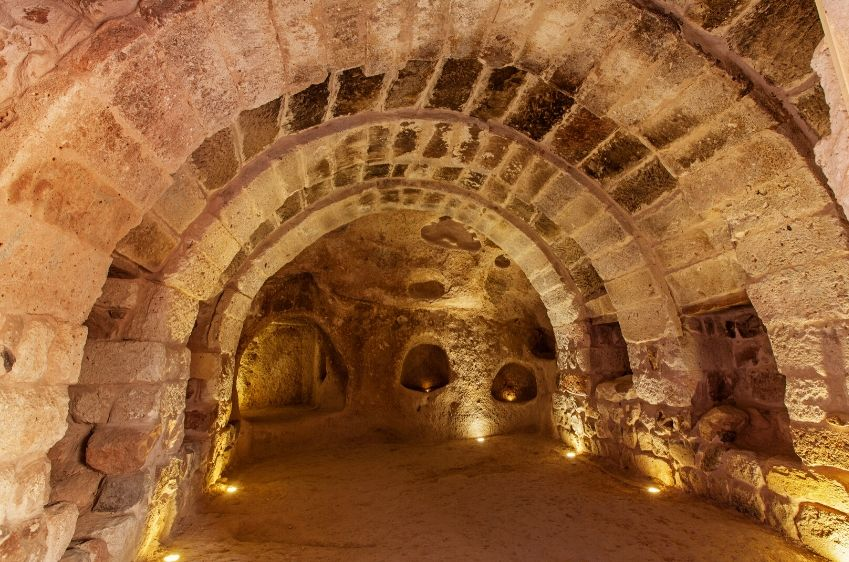 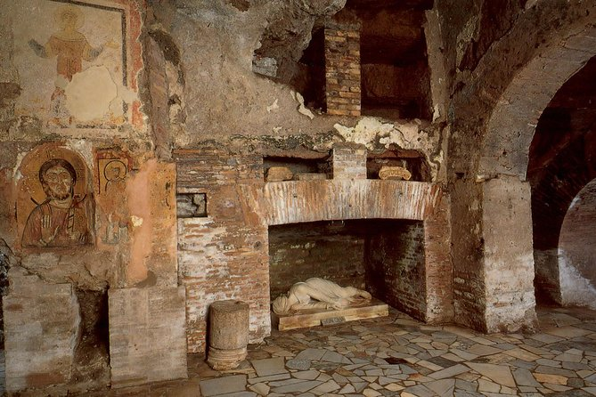 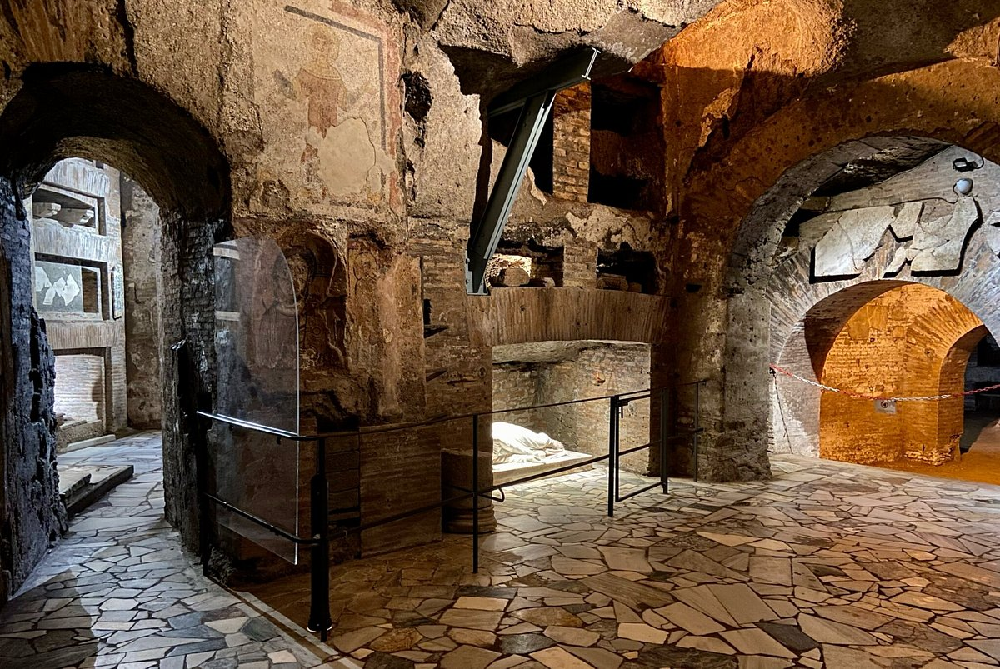  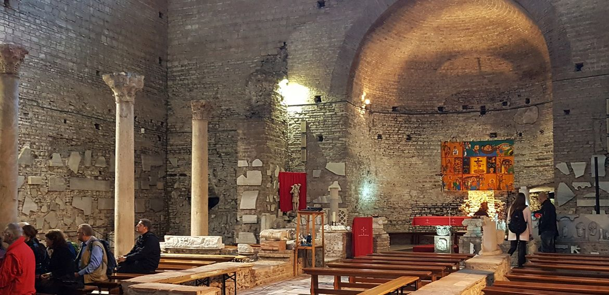
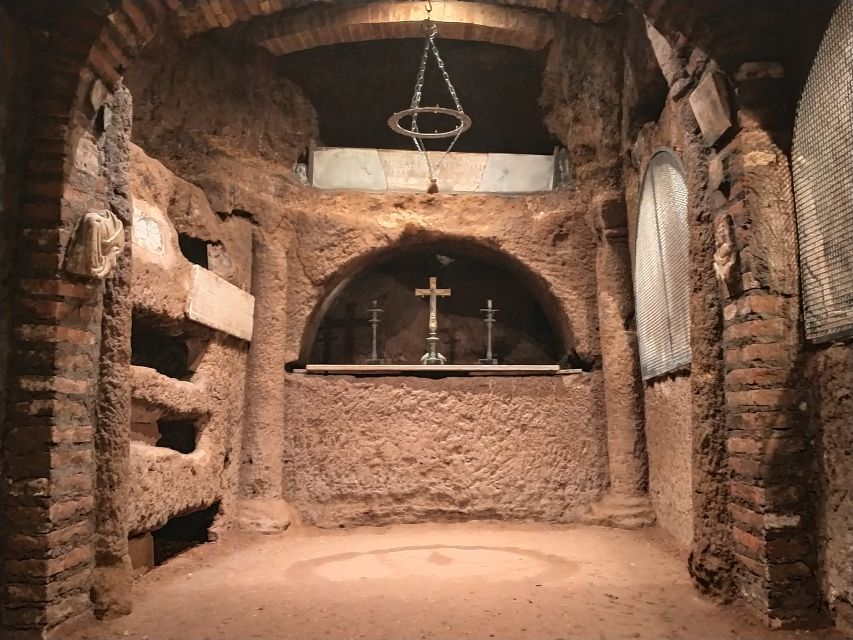
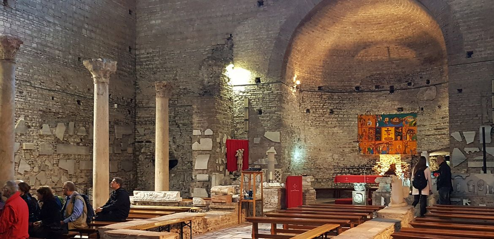
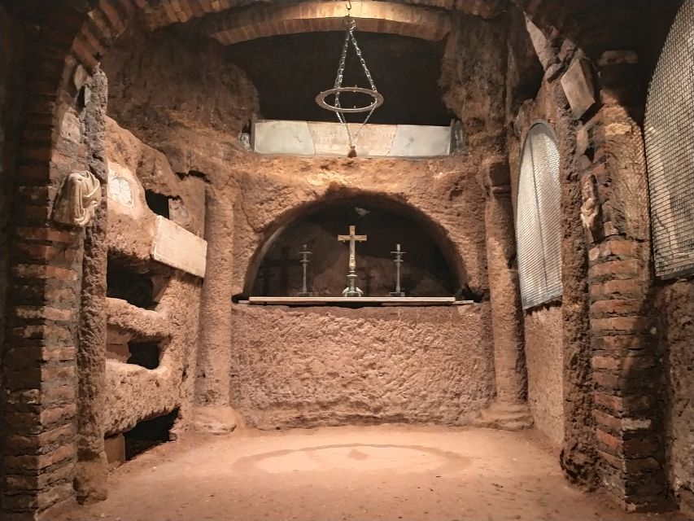
Location
Public Transport in Rome
-
Metro The Metro of Rome only has three lines and is currently the smallest metro system in Europe. Nevertheless, it reaches the city's most important landmarks.
Opened in 1955, the metro (subway or underground) in Rome has grown very little by little and currently only operates 37,3 miles (60 km) made up of three lines. It is one of the smallest metros in Europe.
At present, there are plans for the creation of a fourth line. The reason why the metro system is so limited is that each time a new tunnel is built, more archaeological remains are found; something which also happens in Athens.
Most important metro stations
Although the metro only comprises three lines, it gets to most of the city’s top attractions. These are the most important stops to keep in mind:
Line A (Orange)
Line A runs from the northwest to southeast, from Battistini to Anagnina. The most important stops are the following:
- Cipro - Musei Vaticani: The closest stop to the Vatican Museums and to the Sistine Chapel.
- Ottaviano - San Pietro: This station is a few minutes’ walk from St. Peter's Square and St. Peter's Basilica.
- Spagna: Very convenient for visiting Piazza di Spagna and Villa Borghese.
- Barberini - Fontana di Trevi: This station is five minutes away from Trevi Fountain It is also the closest station to Piazza Navona and the Pantheon.
- Termini: Stops at Roma Termini railway station. Here, visitors can take the Leonardo Express to get to Fiumicino Airport.
Line B (Blue)
Connects the northeast to the south of Rome, from Rebibbia to Laurentina. The most important stops are the following:
- Termini: Stops at Roma Termini railway station. Here, visitors can take the Leonardo Express to get to Fiumicino Airport.
- Colosseo: Located near the Colosseum and the Roman Forum.
- Piramide: If you come in the FR1 regional train from Fiumicino, you will be able to take the metro from this stop.
Opening times
The metro opens every day from 5:30 am to 11:30 pm. On Friday and Saturday, the metro runs until 1:30 am.
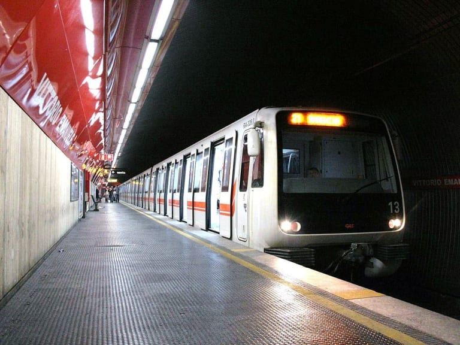 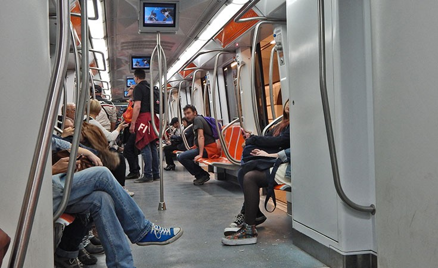 
-
Bus Rome has currently over 350 bus lines and it can sometimes be a bit confusing to find the right bus. Find out the main bus lines in Rome, their schedules and frequencies and tips to help you get around the city on this type of public transport.
Since the metro lines of Rome are rather limited, visitors will most likely need the bus public transport system to get to certain parts of the city. It may not be the most comfortable or punctual form of transportation. Nevertheless, to get to certain monuments and museums it is essential to use the bus.
Currently, Rome has 338 bus lines that run throughout the day, 22 night buses and 8,260 stops. As traffic is an important issue in Rome, do not get impatient if the buses are delayed or if you get stuck in traffic jams, as it is most likely to happen and at any time of day.
Presently, Rome has a fleet of buses that includes electric, conventional, diesel and hybrid vehicles.
Types of buses
In Rome there are various types of lines, these are the most popular:
- Urban lines (U): The large majority. They start between 5 am and 6:30 am and finish at midnight.
- Night buses (N): These lines operate while the urban lines "rest", that is to say, between midnight and 5:00-6:00 am.
- Express (X): These lines are for the outskirts of Rome, for longer journeys.
- Exact (E): These lines link the centre with the surrounding neighbourhoods. They run on fixed timetables.
How to catch a bus?
Rome’s bus routes are possibly the most complex of Europe. The most important information is found on each bus stop.
This includes the bus’s route, the first and last bus and its timetable. Although this does seem straightforward, once there, having waited 30 minutes without seeing one bus drive past, things might seem a littly trickier.
The good news is that many bus stops now include screens with the number of the bus and when the next is due to arrive.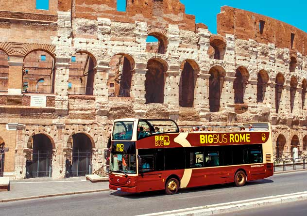 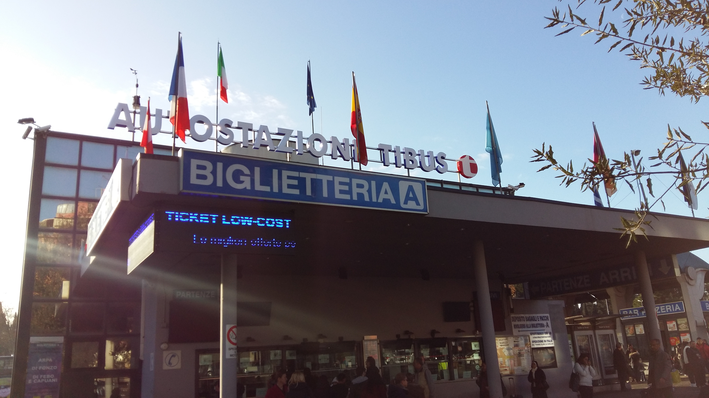
-
Tram Rome’s trams are usually cleaner than the buses and are also considered by many more romantic. Nonetheless, the tram lines are small and the fact that the network doesn’t get to the city centre makes it less appealing for visitors.
Tram lines
The tram network in Rome has six lines:
- Line 2: Piazza Mancini – Piazzale Flaminio.
- Line 3: Piazza Thorwaldsen – Trastevere.
- Line 5: Giovanni Amendola – Piazza dei Gerani.
- Line 8 Torre Argentina – Trastevere.
- Line 14: Giovanni Amendola – Palmiro Togliatti.
- Line 19: Piazza Risorgimento – Piazza dei Gerani.
It is important to point out that most of these lines, do not hold a lot of special interest for tourists. The best line for travellers is actually number 8, which links Trastevere with Largo di Torre Argentina.
Opening times
Trams run from 5:30 am until midnight every day, like the city buses in Rome. At night, the trams are replaced by night buses.
Remember to validate your ticket
Remember when you get on any tram to validate your ticket at their validation machines, otherwise you will be fined.
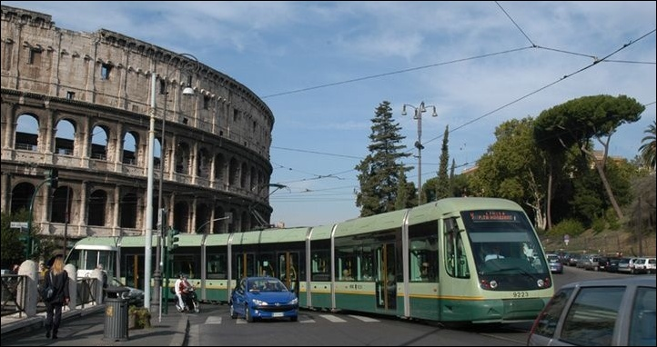 
-
Urban Railway The urban trains in Rome, called Ferrovie Urbane, complement the three metro lines and are run by the same company. The tickets are the same and the prices too.
Urban railway lines
The Ferrovie Urbane is made up of following three lines:
- Rome – Lido.
- Rome – Viterbo.
- Rome – Giardinetti.
Of these lines the most important from a tourist's point of view is the Rome-Lido, since it stops at Ostia Antica.
Where to buy the tickets?
Since the tickets are the same as other forms of public transportation in Rome, these can be bought in urban train stations, metro stations, news agents and convenience stores. If your hotel is near one of these stations or you think you’ll be using the public transport in Rome regularly, then we recommend you get a few tickets at a time or buy a travel card.
Timetable and frequency
Urban trains run approximately from 5:30 am to 10:30 pm. The Rome-Lido line runs until later, till 11:30 pm. Trains leave every 10 to 20 minutes, depending on the time of day.
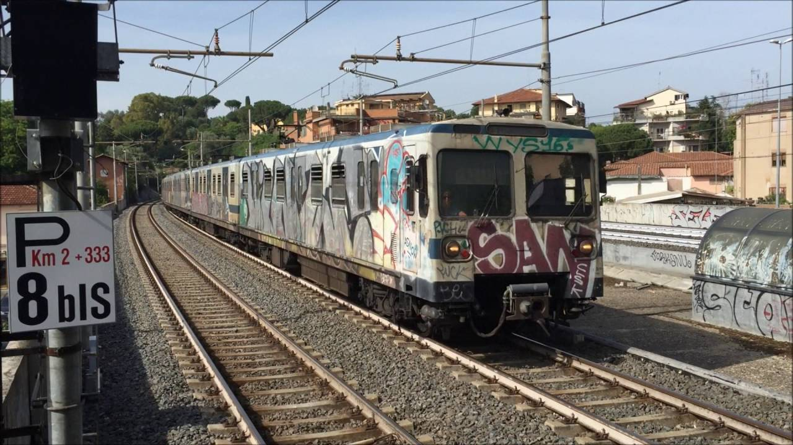 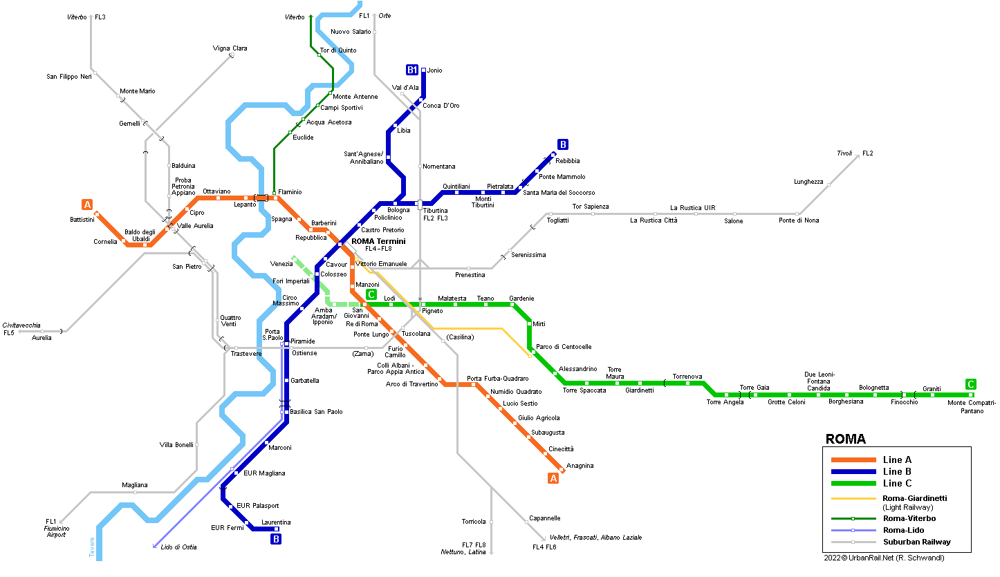 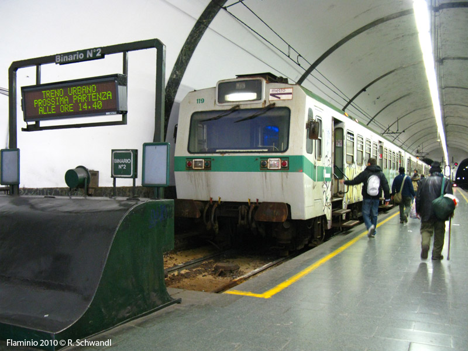
-
Taxis Unfortunately, taxi drivers don’t have a good reputation in Rome. Many tourists and locals are continually overcharged. What's more, taxi rates in Rome are considered quite high compared to certain European capital cities. Find out about the rates and tips on how to avoid being swindled.
Rates
- Minimum fare on weekdays from 6 am – 10 pm: € 3 (US$ 3.20)
- Minimum fare on public holidays 6 am – 10 pm: € 4.50 (US$ 4.80)
- Minimum fare at night time: € 6.50 (US$ 7)
- Rate per kilometre (Tariff 1): € 1.10 (US$ 1.20)
- Rate per kilometre (Tariff 2): € 1.30 (US$ 1.40)
- Rate per kilometre (Tariff 3): € 1.60 (US$ 1.70)
- Surcharge for each additional suitcase (one per passenger included in the price): € 1 (US$ 1.10)
- Surcharge for telephone reservations: € 3.50 (US$ 3.80)
- One hour waiting time: € 27 (US$ 29)
If the taxi rates are compared to those in Madrid, they are slightly higher and the minimum fare is also higher. However, if compared to Florence and Amsterdam, the prices in Rome are slightly lower.
Based on the official taxi rates, an average journey in the centre of Rome should cost between 6 and 8 euros.
Avoid being swindled
Taxi drivers in Rome are renowned for trying to rip off both visitors and Romans. Find out what to do to avoid this happening to you during your stay in this magnificent city:
- Official taxi rates to and from both airports: To get to and from Fiumicino Airport and Ciampino Airport will always cost you the same. The journey to/ from Fiumicino costs € 48 (US$ 51.70) and Ciampino, € 30 (US$ 32.30). These prices are valid for up to four passengers and their suitcases. Refuse to pay if you are charged extra.
- The rates from Termini railway station to the city centre should cost between € 8 (US$ 8.60) and € 15 (US$ 16.20). If you can, it is always a good idea to check the route on Google Maps before you get in the taxi so you have an idea of how long it takes.
- Choose the correct type of taxi: The first thing to do as not to get swindled is to make sure the taxi you take is correctly identified. All taxis in Rome are white, with a taxi roof sign and a taximeter visible at the front of the car. Hail cabs that have a telephone number written on the sides of the vehicle, which means that they work for a taxi company.
- If you have any problem, write down the taxi’s license plate number (it is always at the back of the front seats) and call the taxi company.
- If at any point you think you are being swindled, don’t let the taxi driver intimidate you and call the Carabinieri. Additionally, it is always a good idea to ask for a receipt and complain to the taxi company.
Taxi companies
Although the cheapest way to catch a cab is by waiting at the official taxi stops on the streets of Rome, it is also possible to reserve this type of transportation by telephone. These are some of the best taxi companies in the city:
- Radio Taxi: +39 06 3570
- Pronto Taxi: +39 06 6645
- Other companies +39 06 5551, +39 06 4994, +39 06 4157.
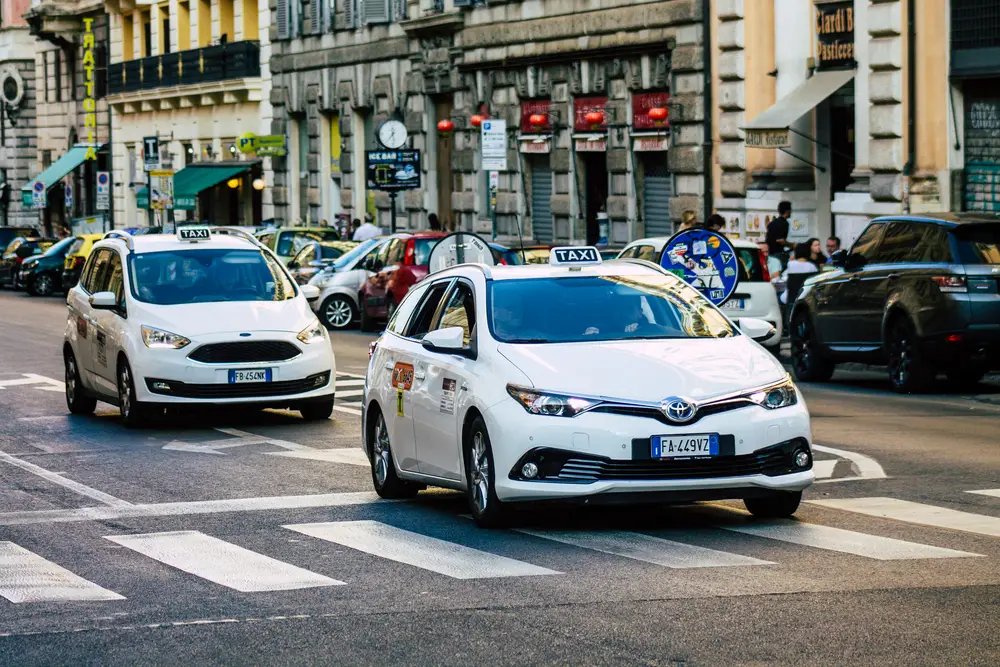 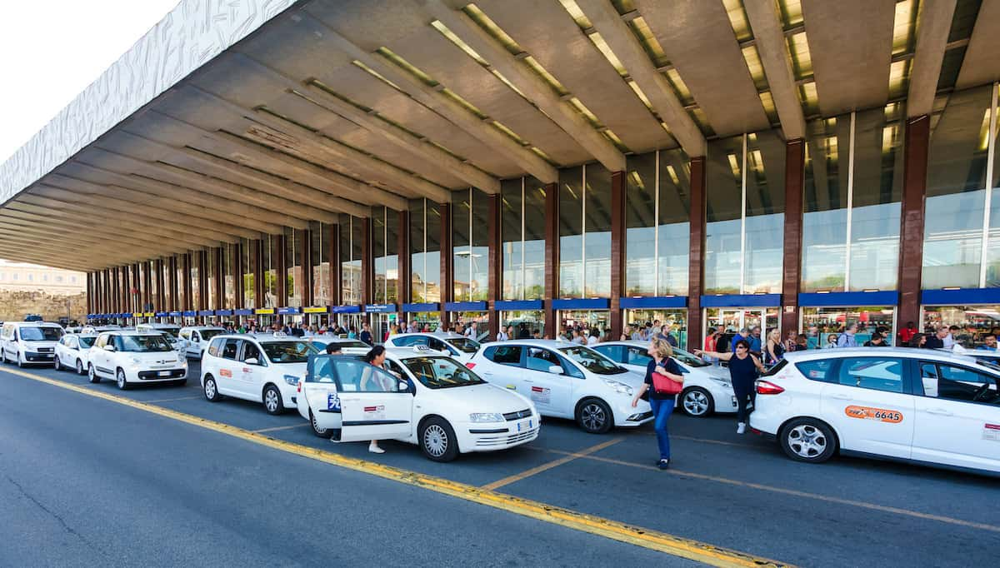
Where to Eat
|
Where to Stay
|
Shopping
|